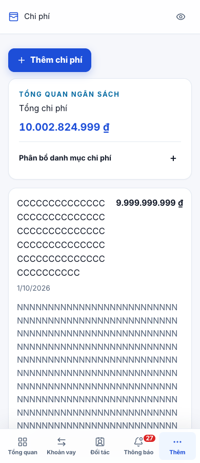
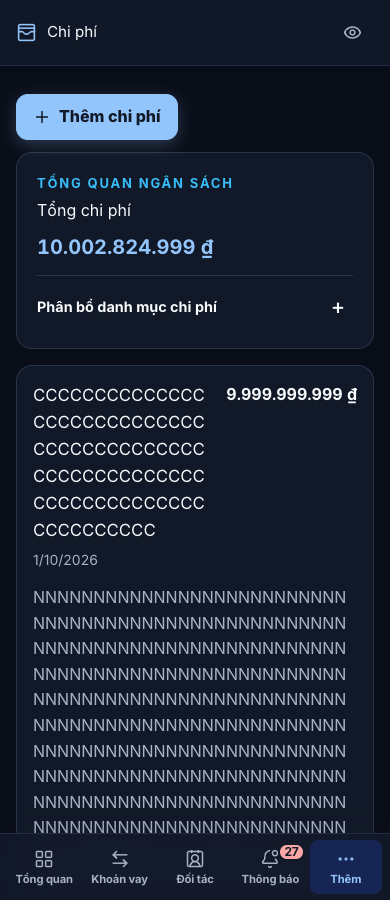
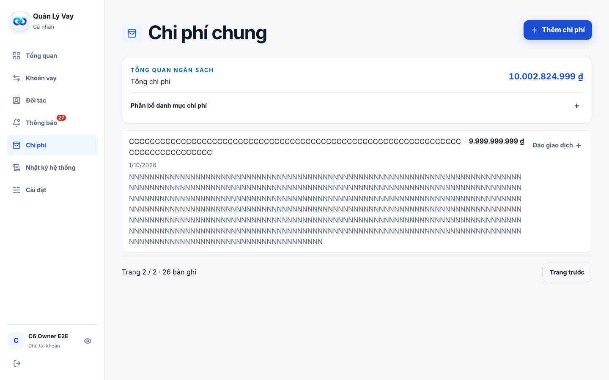
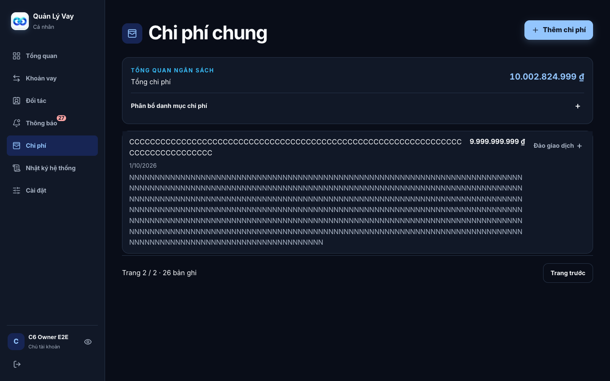
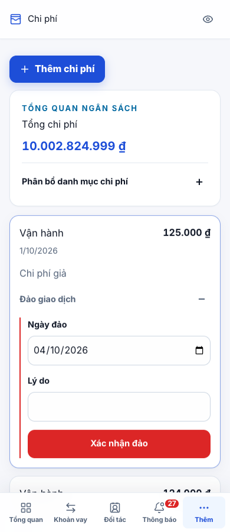
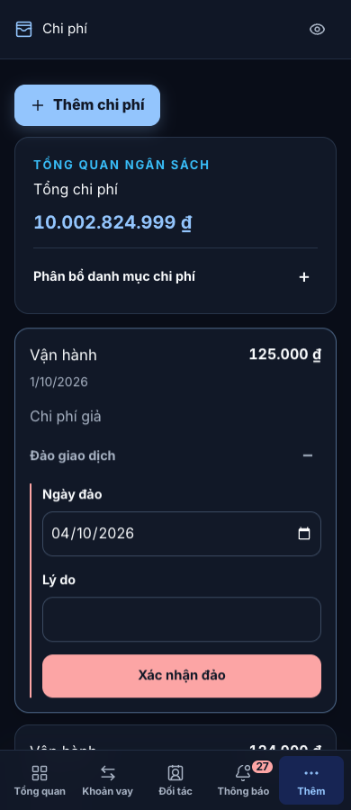
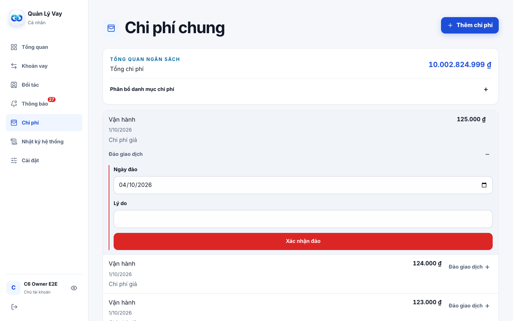
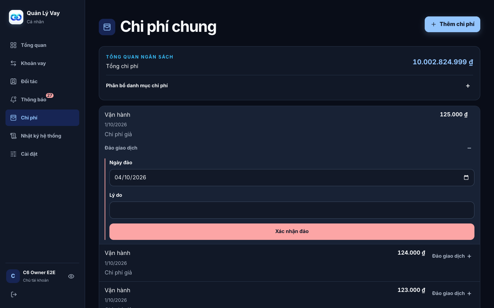

C84 · Ít thao tác hơn, chủ động chọn Sáng/Tối
Phương án A đã được duyệt. Giữ màu xanh, Inter, quyền và nghiệp vụ. KPI dư nợ/lãi ròng vẫn trên Việc cần xử lý. Các ảnh và tài khoản dưới đây đều là dữ liệu kiểm thử giả. Cuộn trong từng ảnh để xem phần dưới; bấm ảnh để mở bản gốc.
Cài đặt và bộ chọn giao diện · 390px · light
Cài đặt và bộ chọn giao diện · 390px · dark
Cài đặt và bộ chọn giao diện · 1440px · light
Cài đặt và bộ chọn giao diện · 1440px · dark
Chi phí chung · 390px · light
Chi phí chung · 390px · dark
Chi phí chung · 1440px · light
Chi phí chung · 1440px · dark
Thông báo · 390px · light
Thông báo · 1440px · light
Thông báo · 1440px · dark
Chi phí: danh mục80 và ghi chú500 không có khoảng trắng · 390px · dữ liệu giả

Sau C84 · light · không thực hiện đảo trên Production
Sau C84 · dark · không thực hiện đảo trên ProductionChi phí: danh mục80 và ghi chú500 không có khoảng trắng · 1440px · dữ liệu giả

Sau C84 · light · không thực hiện đảo trên Production
Sau C84 · dark · không thực hiện đảo trên ProductionForm đảo giao dịch khi mở · 390px · dữ liệu giả

Sau C84 · light · không thực hiện đảo trên Production
Sau C84 · dark · không thực hiện đảo trên ProductionForm đảo giao dịch khi mở · 1440px · dữ liệu giả

Sau C84 · light · không thực hiện đảo trên Production
Sau C84 · dark · không thực hiện đảo trên Production